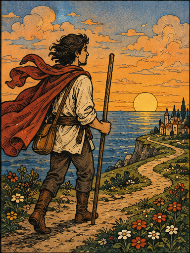
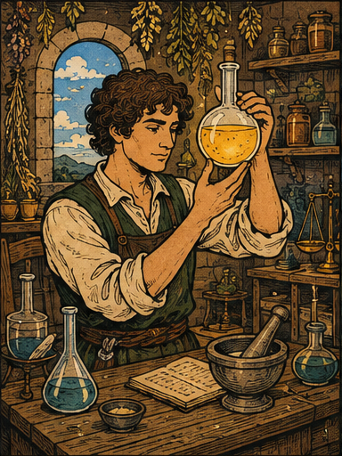
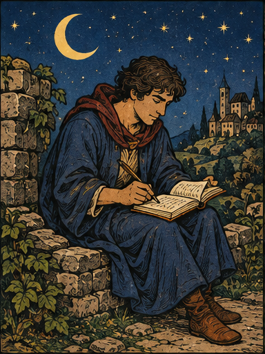

A LITTLE JOURNEY INTO YOURSELF
スピタイプ診断
あなたの中に、どんな物語がある？
偶然、運命、運の流れ、信じる力。
12の短い二択に答えると、
あなたを映す一枚に出会います。
TWENTY-FOUR STORIES, ONE OF YOU.II朝焼けの風乗り I希望の錬金術師 VII月夜の詩人
物語のはじまりTHE SPIRIT TYPE COLLECTION — 01 / 24


01 — THE READING
運命よりも、
あなたの信じ方を。
同じ星を見ても、願うことは人それぞれ。
出来事の中に何を見つけ、どんな一歩を選ぶのか。
4つのまなざしから、あなたらしさを読み解きます。
未来を予言する占いではなく、
自分を知るための小さな物語です。
I — OUTLOOK
偶然に、何を見る？
希望を見つける。兆しに備える。
II — FATE
未来は、どこへ続く？
自分で選ぶ道。導かれてゆく道。
III — FLOW
運は、どう続く？
勢いのまま続く。上がり下がりをめぐる。
IV — POWER
力は、どこに宿る？
言葉。特別な場所。大切なアイテム。
YOUR STORY IS WAITING
まだ知らない自分に、
会いにいこう。
正解はありません。二つの答えから直感のまま。
全12問 約1分 無料・登録不要